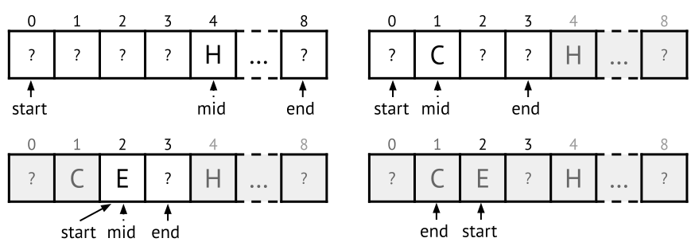

1.3 Case study: Linear and binary search in arrays
One of the most fundamental tasks that we use computers for is searching. We want to find an object that matches some criteria, in a collection of objects. In fact, most of the data structures and algorithms that we will present in this book have to do with searching in some way – how to store data so that we can retrieve them easily, and how to find the data we are interested in.
One way of storing a collection of objects is to put them in an array. So, assuming that we have an array of objects, how can we find a certain object in this array?
Linear search
Suppose we are searching for a particular book in a bookshelf. If the shelf is not in any particular order, our only option is to look at each book and see if it is the one we are looking for. This algorithm is called linear search, and is the most straightforward way to search a collection. Here is a simple implementation for an array, written in pseudocode:
linearSearch(arr, key):
for i in 0 .. arr.size - 1: // For each element in the array:
if arr[i] == key: // If we found the search key:
return i // return this position
return null // Otherwise, return nullNow imagine that the bookshelf is actually a whole library (the British Library has more than 200 million catalogued items). How long time will that take – do I have to leave the computer running until tomorrow?
More interesting than the time it takes to search a particular
bookshelf on a particular computer, is the question of how the time
scales when the bookshelf is expanded, regardless of how fast the
computer is. How does the search time change if we double the size of
the bookshelf? Particularly, we are interested in the worst
case time. A supremely lucky person may always find their book in
the first slot they check (in the linearSearch function
that would correspond to arr[0] == key always being true).
The worst case is that we are searching for a book that is not
in the shelf at all.
In the worst case, doubling the size of the bookshelf will double the search time. Thus, in linear search there is (suitably) a linear relationship between the size of the bookshelf and the search time. We say linear search is a linear time algorithm.
Binary search
No library keeps books in random order, because linear search is too slow. Instead, books are sorted in the shelves, for example alphabetically by author name and title. Most people can intuitively use this order to search a bookshelf by looking at only a small fraction of the books. When browsing the books we implicitly make deductions like “there are no books between Orwell and Owen, so there are no books by Osborne” and “this book is by Plato, so all books by Homer must be earlier in the shelf”. The formalised algorithm that uses these deductions is called binary search. It is a very common choice for a first algorithm to teach students, so you may have seen it before. For the example of a book shelf sorted alphabetically from left to right, binary search would be described as such:
- Compare the middle book in the shelf to the one we are looking for.
- if the middle book is the one we are looking for, our search is done!
- if we are searching for an alphabetically earlier book, search the left half of the shelf, otherwise search in the right half.
- Repeat this procedure for the left or right half, comparing to the middle book of that half, and so on.
This procedure will end in one of two cases: We find the book we are looking for, or we end up searching an empty part of the bookshelf, and know that the book is not in the shelf.
To make the description of this algorithm more precise, introduce the concept of a search interval. Initially our search interval is the entire bookshelf, and with each comparison we reduce the search interval to just the left or right side of the middle element. For instance, we can go from the problem of searching among 51 books to the problem of searching 25 books, by a single comparison with the middle book, and excluding either half from the interval. This is further reduced to searching among 12 books with another comparison. We need to decide what we mean by the middle of 12 books, but we should have to search among at most 6 books in the next step. Ultimately we end up either finding the book we are looking for, or searching among 0 books, and in both cases we have the answer we were looking for.
This process of reducing a problem to a smaller instance of the same problem is a key concept in algorithm design. We can easily generalise the algorithm from searching book cases to searching in a sorted array of elements.
Algorithm: Binary search
To find out if a key is in a given sorted array, start with an interval including the whole array. Repeat the following until key has been found, or the interval is empty:
- Compare key with the middle element of the interval.
- If key is equal, return true, the key is in the array.
- Exclude the middle element and all elements either before or after it, depending on if the key is greater or smaller than the middle element.
If the interval ends up empty, return false, the key is not in the array.
To turn this algorithm into actual code, we need to decide how to represent the search interval in computer memory. The operation of excluding elements from the interval needs to be fast – making a new smaller array is too slow. Instead we define the interval by the lower and upper indices it includes, so (10,24) would represent the interval from index 10 to and including index 24 (15 elements). The middle element is (10+24)/2=17 (rounding down when needed). Searching the lower half just means altering the interval to (10,16), and the upper half (18,24). Here is an implementation of binary search that does not only say if the key is in the array, but also at which index it resides (or null if it is absent):
binarySearch(arr, key):
start = 0 // The index of the first element in the interval
end = arr.size - 1 // The index of the last element in the interval
while start <= end: // Continue until the interval is empty:
mid = (start + end) / 2 // Find the index of the middle value
if arr[mid] < key: // Compare with the middle value in the interval:
start = mid + 1 // The search key is in the upper half
else if arr[mid] > key:
end = mid - 1 // The search key is in the lower half
else: // (here arr[mid]==key)
return mid // We found the search key!
return null // The value is not in the array.An important technical detail here is that \mathit{mid} = (\mathit{start} + \mathit{end}) / 2 is understood to use integer division, so (6+11)/2 is 8, not 8.5. Consider how this implementation deals with corner cases, for instance when the search area has a single element (when \mathit{start}=\mathit{end}). Or when it has two elements. Does it calculate \mathit{mid} correctly and yield correct result in these cases?
In this particular implementation we use inclusive indices, both \mathit{start} and \mathit{end} are inside the area. Another common option is to have \mathit{start} be inclusive, and \mathit{end} exclusive (so the starting interval is (0,\mathit{arr.size})). Yet another option is to have a start index and a size of the interval. Each variation would do slightly different calculations, but require the same fundamental building operations: Finding the middle element, and excluding the upper/lower half of the interval. Figure 1.1 illustrates an example search of a small array.

There are many variations of binary search. If the array had books sorted by number of pages, we could use it to find books of a desired length, or even all books in a precise range of pages. Consider what would happen if the array was not sorted properly, can you construct a small example where the algorithm would go wrong? Also consider, could binary search be used to determine if an array contains a prime number?
Here is an illustration of the binary search algorithm.
Running time of binary search
For linear search, in the worst case we have to look at all books in the bookshelf (all elements of the array). That means running time grows linearly with the size of the bookshelf. What is the corresponding worst case for binary search?
We can immediately see that it looks at much fewer books. The first
comparison we do, looking at a single book, excludes half the bookshelf
from the search interval. In fact, every comparison, or in the code –
every iteration of the while-loop, will reduce the size of
the search interval by at least 50\%.
How many times can we integer divide a number n by 2 before we reach 0? For n=2^x, the answer is x+1, so ignoring some rounding the answer is
x=\log_2(n).
We say that binary search is a logarithmic time algorithm, as opposed to linear search being linear time. For large collections, this difference is staggering. For a bookshelf with a million books, binary search requires us to look at 20 books worst case, instead of a million. For a staggeringly bookshelf of a billion books, binary search requires less than 30 comparisons, making it tens of millions times faster than a linear search.
This example highlights a crucial insight about algorithms: Buying a computer that is twice as fast will reduce the time consumption of your task by half. Switching programming language to C from Python might yield a similar speed-up. Both of those are nice, but switching from a linear time algorithm to a logarithmic one can reduce runtime by a factor of millions, reducing runtime from years to seconds.